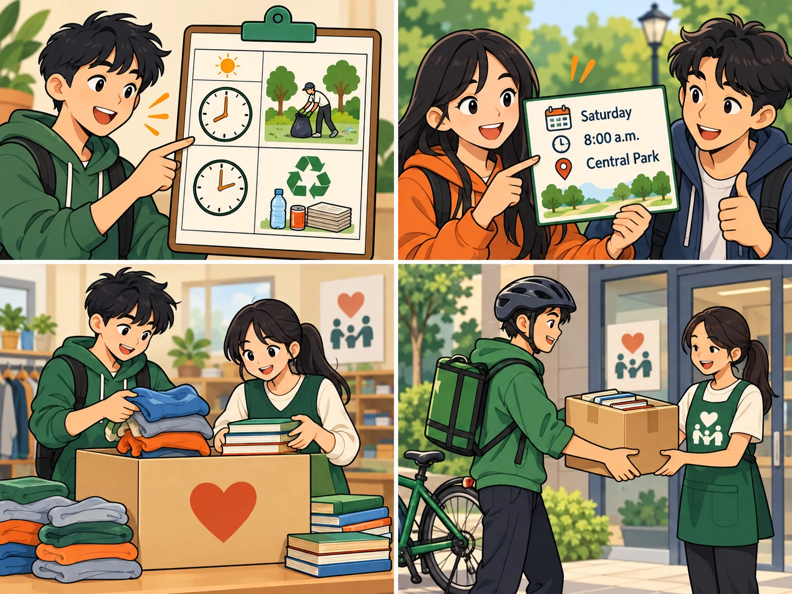
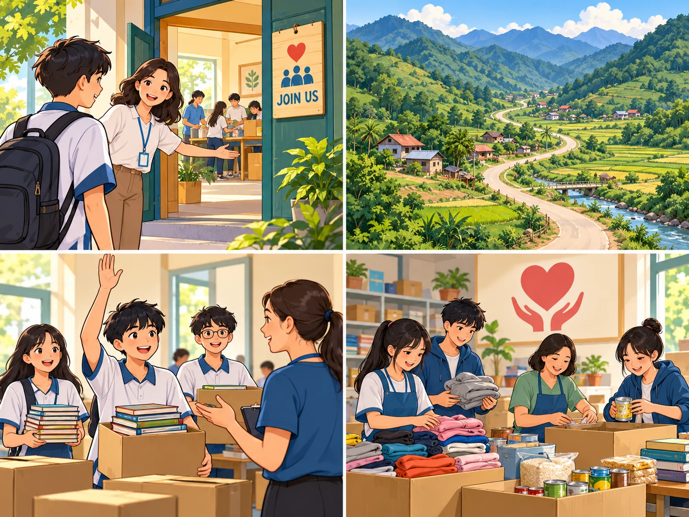
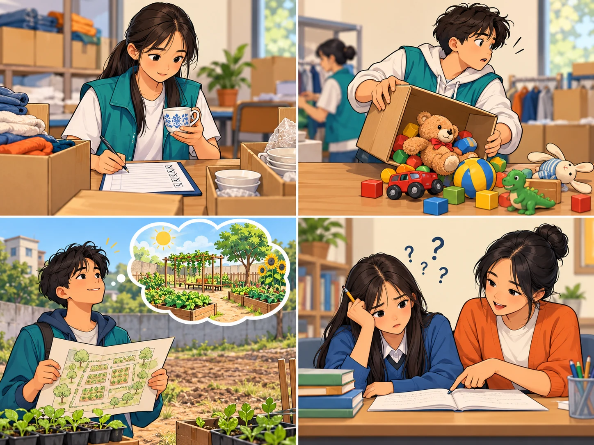
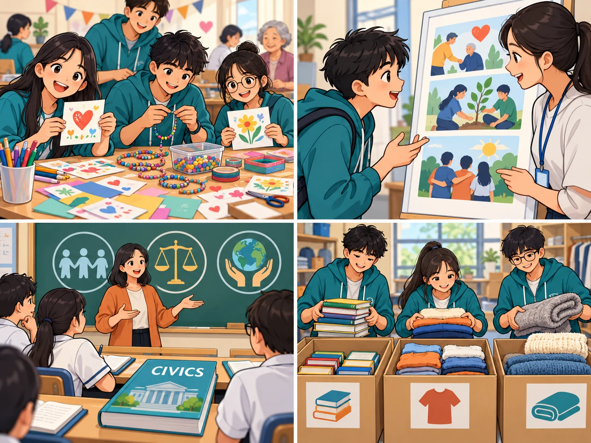

Language
Lesson 2 — Stress · words · past tenses
4Five stops in 45 minutes
- 🤝
Warm-up
Community helpers
3 min - 🗣️
Stress
Same spelling, two stresses
8 min - 🎁
Words
Community development
12 min - ⏳
Grammar
when / while
14 min - 🦸
Game
Word Heroes
6 min
By the end of this lesson…
- 🔊
Pronunciation
Stress two-syllable nouns and verbs with the same spelling.
- 🎁
Vocabulary
Use words about community development and -ed/-ing, -ful/-less adjectives.
- ⏳
Grammar
Use the past simple and past continuous with when and while.
Community helpers
Warm-up
3 minutesHow do these people help the community?
- 👕 donating clothes
- 🌳 cleaning a park
- 📚 teaching children
- 🍲 giving food
- 👵 helping old people
- 💧 building clean water projects
Which one would you like to do? Why? I’d like to teach children in remote areas because I love reading.
Pronunciation
Stress in two-syllable words with the same spelling
8 minutesSame spelling — different stress
NOUN → 1st syllable
REcord · INcrease · PREsent · EXport
VERB → 2nd syllable
reCORD · inCREASE · preSENT · exPORT
Note: not always! an ANswer / to ANswer · a PICture / to PICture
Which stress do you hear? · 1–3
1. The centre keeps a record of all donations. a. ’record · b. re’cord a. ’record (noun)
2. We will record the charity live show for those who can’t watch it live. a. ’record · b. re’cord b. re’cord (verb)
3. There was an increase in house prices last year. a. ’increase · b. in’crease a. ’increase (noun)
Which stress do you hear? · 4–6
4. We want to increase students’ interest in volunteering at the community centre. a. ’increase · b. in’crease b. in’crease (verb)
5. I got this present from a visitor to our centre. a. ’present · b. pre’sent a. ’present (noun)
6. We need to help local businesses to export their products. a. ’export · b. ex’port b. ex’port (verb)
Say the sentences in Task 1
Pause after each sentence. Clap on the stressed syllable of the word in italics, then say the whole sentence.
Vocabulary
Community development · page 44
12 minutes
donate
(v) /dəʊˈneɪt/ quyên góp, hiến tặng People donate books and clothes to our club.
volunteer
(n/v) /ˌvɒlənˈtɪə(r)/ tình nguyện viên; tình nguyện We volunteer at the local centre.generous
(adj) /ˈdʒenərəs/ hào phóng, rộng lượng Our neighbours are generous and help the club.
remote
(adj) /rɪˈməʊt/ xa xôi, hẻo lánh We teach children in a remote village.
benefit
(v/n) /ˈbenɪfɪt/ có lợi cho (v); lợi ích (n) v: Our work can benefit others.n: One benefit is greater confidence.
willing
(adj) /ˈwɪlɪŋ/ sẵn lòng, sẵn sàng We are willing to help at the food bank.charity
(n) /ˈtʃærəti/ tổ chức từ thiện; việc từ thiện She donated books to a local charity.
clean up
(phr. v) /kliːn ʌp/ dọn dẹp, làm vệ sinh We clean up the park every Sunday.
careful
(adj) /ˈkeəfl/ cẩn thận, thận trọng Be careful when you record donations.careless
(adj) /ˈkeələs/ bất cẩn, cẩu thả A careless mistake can damage donated items.hopeful
(adj) /ˈhəʊpfl/ đầy hy vọng, lạc quan We are hopeful about the community project.hopeless
(adj) /ˈhəʊpləs/ vô vọng; rất kém (at something) I was hopeless at maths before volunteer tutoring.
interesting
(adj) /ˈɪntrəstɪŋ/ thú vị, gây hứng thú The charity craft activity is interesting.interested
(adj) /ˈɪntrəstɪd/ cảm thấy hứng thú, quan tâm I am interested in volunteer work.civics
(n) /ˈsɪvɪks/ môn Giáo dục công dân We discuss community service in our civics class.sort
(n/v) /sɔːt/ loại, kiểu (n); phân loại (v) n: What sort of books do you need?v: We sort the donations.
donation
(n) /dəʊˈneɪʃn/ sự quyên góp; đồ hoặc khoản quyên góp Your donation of books can help local children.Match the words with their meanings
1. donate (v) c
2. volunteer (n) e
3. generous (adj) a
4. remote (adj) b
5. benefit (v) d
a. giving or willing to give freely
b. far away from places where other people live
c. to give money, food, clothes, etc. to a charity
d. to be in a better position because of something; to be useful to somebody
e. a person who does a job without being paid for it
Use the correct forms of the words in 1
1. He is very ______. He is always willing to give a lot of money to charity. generous
2. The school is difficult to get to because it is located in a ______ area. remote
3. If you don’t have time to volunteer, you can ______ money and food. donate
4. This clean water project will ______ the people in the village. benefit
5. Our club needs more ______ to clean up the park at the weekend. volunteers
-ful / -less · -ed / -ing
1. We need to be careful / careless when we record the donations. careful
2. I am interested / interesting in community development activities. interested
3. There are excited / exciting volunteering opportunities in our community. exciting
4. Last year, I was hopeful / hopeless at maths. I couldn’t even do simple addition in my head. hopeless
-ful = having · -less = without · -ed = how people feel · -ing = what causes the feeling
Grammar
Past simple vs past continuous
14 minutesPast simple vs past continuous with when and while
Past continuous
a past action in progress (longer action)
I was reading an article …
Past simple
the action that interrupted it (shorter action)
… when she called.
While I was reading an article, she called.
Choose the correct verb form
1. While Lan was working / worked as a volunteer in the countryside, she met an old friend. was working
2. I was revising for my civics class when my dad was telling / told me about the volunteer job. told
3. We saw many unhappy children while we were helping / helped people in remote areas. were helping
4. He was sorting the donations when he was realising / realised how generous people were. realised
Combine with when or while · 1–2
1. They were cleaning the streets. It started to rain. While they were cleaning the streets, it started to rain. / They were cleaning the streets when it started to rain.
2. I was watching TV. I saw the floods and landslides in the area. While I was watching TV, I saw the floods and landslides in the area.
Combine with when or while · 3–4
3. Tim was searching for employment opportunities. He found a job advert from a non-governmental organisation. While Tim was searching for employment opportunities, he found a job advert from a non-governmental organisation.
4. They decided to help build a community centre for young people. They were visiting some poor villages. They decided to help build a community centre for young people while they were visiting some poor villages.
Word Heroes
Game · save the city
6 minutesWhat have you learnt today?
Today’s board
Stress: a REcord (n) · to reCORD (v)
Words: donate · volunteer · generous · remote · benefit · careful/careless · interested/interesting
Grammar: I was working when he called · While we were helping, …
Homework: workbook Unit 4 Language; prepare Lesson 3 — Reading (page 45).